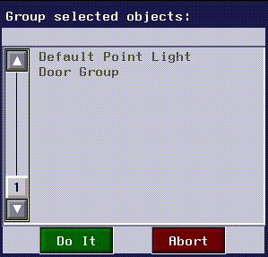
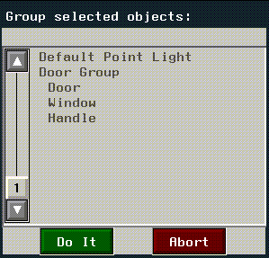
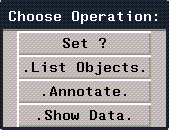
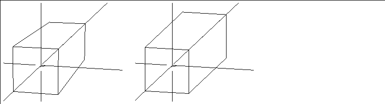
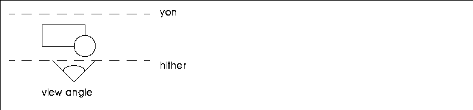
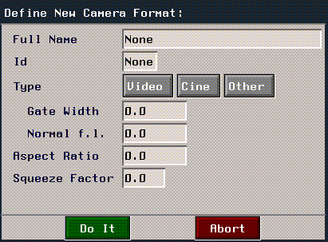

[N-World Contents] [Book Contents] [Prev] [Next] [Index]
Utilities
The Utilities menu lets you do the following:
Figure 7.1 Utilities menu
Restructure
Collects several objects to form one new compound object. For example, if you have created a door by making three separate objects-the door itself, a handle, and a window-they can be collected and made into one named object with this command. The new object is referred to as a "group."
Such a restructured object can then be animated in N-Dynamics by referencing the new compound object rather than animating each terminal object separately. (Refer to the N-Dynamics Reference Manual and N-Dynamics Tutorial for more information.)
Using the same technique, you can attach a light to an object in order to illuminate a particular part of the object. If you later transform that object, the light will be also be transformed, remaining in its relative position to the object.
To restructure an object:
Figure 7.2 Restructuring objects
Figure 7.3 Restructuring into an existing object
- Choose the Door, Handle, and Window objects, then (CLICK-L) on
Do It; you're then prompted to select which of those three objects you want to combine those objects into. (CLICK-L) on "Door" to create a new group called "Door Group." The next time you look at a list of objects in the scene, you can see that a new group has been created:

Figure 7.4 The resulting superior object (now a group)
- If you (CLICK-R) on the group, you can see the inferior objects in of the Door Group object:

Figure 7.5 Displaying the elements in a group
- This is particularly useful if you create new, top level objects and want to add them to an existing group. For example, you might create a peephole later and add it to the existing door group.
- Note. If you move all objects in a group to the top level, the empty group is eliminated from the object list.
- Note. An object's position in the object hierarchy is also displayed in the mouse documentation line. A quick glance at the description of the object can tell you its relative position in an object or group's hierarchy.
Rename
Renames an object. N-Geometry assigns an object a unique name, such as Cube when it is added to the environment. However, an assigned name does not necessarily reflect the nature of the object, and a name that describes the initial state of an object with relative accuracy such as cube or sphere might become inappropriate once the object has undergone extensive modification. Rename enables you to keep an object's name descriptive of its current state or its intended use.
Figure 7.6 Rename menu
Info
The Info operation lets you display various types of information about objects in the N-Geometry window. If you (CLICK-L) on Info, a menu of operations is displayed:

Figure 7.7 Info operations
Each of these operations is described below.
Set ?
Sets the global variable "?" to the last object, and the previous object to "??". This operation is typically reserved for use by developers.
For details on how to use this command, see the N·World Developer's Reference Guide.
List Objects
The List command displays a list of elements in the selected object(s). This list is printed in the UNIX shell window from which N·World was started.
A list for a complex object might look like this:
----------------- SELECTED OBJECTS --------------------
"2-Subobjects"
"Copy of Torus" #<POLYHEDRON 94>: 648pts 1296edges 648faces.
"Torus" #<POLYHEDRON 91>: 648pts 1296edges 648faces.
Element totals: 1296 pts, 2592 segments, 1296 faces.
Annotate
The Annotate item prints element serial numbers over the line drawing of the object. The serial numbers will disappear by hitting the SPACEBAR, moving the camera, or moving the mouse off of the view window.
Figure 7.8 Icosahedron with edges annotated
In addition to the above options, you may (CTRL-*) on Annotate display pertinent information about elements on the screen.
Using this operation requires some knowledge of the LISP format function and its directives, and should only be used if you need a special type of element display. For more information on this option, contact Nichimen Graphics Support.
Show Data
Displays known information about an object or the camera.
Render
Lets you render the current scene in N-Geometry.
Figure 7.9 Render defaults menu
Preferences
The Preferences command opens a multi-page menu which lets you set global operational parameters for N-Geometry.
- Note. Some of these menu items are also found on the Modes submenu (see the section "Modes," on page 5-2), which typically comes up faster than this menu).
Across the bottom of the preferences menu are several buttons which let you save or change your preferences:
To open a section of the menu, (CLICK-L) on the vertical bar with the appropriate name. Each submenu on the Preferences menu is described below:
Camera Preferences
- Note. Depending on your renderer, you may or may not be able to render orthographic views. N-Render does support orthographic renders.
- Note. You can also toggle orthographic mode on and off with (SHIFT-O)
- Figure 7.10 illustrates two views of the same object, one in perspective and one in orthographic mode.

Figure 7.10 A perspective view and an orthographic view of the same object
Figure 7.11 Setting the viewing depth ratio
- Note. Keeping the amount of headroom to a minimum generally increases the quality of rendered images.
- Note. A very low minimum hither distance reduces the depth precision with which objects are rendered; objects may appear to overlap or be displayed out of order as they get extremely close to the viewer.

Figure 7.12 Hither and yon clipping planes
- Note. Positioning the mouse over any of the format names listed in the pop-up menu displays the aspect ratio of that format in the mouse documentation line.
- See the American Cinematographers Guide, published by the American Society of Cinematographers, for detailed information about each film format.
- You can define a new camera format by choosing the New option at the top of the menu. (CLICK-L) on New to display the following menu:

Figure 7.13 Defining a new camera format
Mouse Preferences
- Note. It may be helpful to lower the mouse speed if you are doing detail work that requires fine movement.
- The default is 25.
Axes & Cursor Preferences
Figure 7.14 The global axes, global axis gap, and axis labels
Color Preferences
Pathname Preferences
- Note. The global default directory is common to all N-World products.
Element Edit Preferences
- Scale by Zero Action lets you define what happens when you try to scale an object with a zero:
- Scale by Zero Standin lets you specify a default value used with the Replace option in the Scale by Zero Action (directly above).
- Magnet Falloff Function specifies the curve type used to calculate area of influence calculations.
- Magnet Distance Route determines how areas of influence are measured:
- Numeric Input Default specifies whether numeric input menus are displayed by default for modify operations.
- Tube Transforming Item determines whether an additional field appears on the tube creation dialog box. (Advanced users can then specify a function in that dialog box that modifies the cross-section of the tube as it moves along the path. For more information on using this feature, contact Graphics Support.)
- Logo Utilities Item, if selected, adds items to the text menu for automatic extruding, deholing, beveling, and coplanaring of letters, all useful functions for creating specialized type like that used in logos.
- Max Face Size for Update is the maximum number of vertices a face can have and still have its normals updated interactively.
- Max Normals for Update specifies the maximum number of normals that are updated during interactive operations (e.g., Move). It primarily affects backfacing. If the operation would cause more than the specified number of normals to be updated, backfacing display is not updated until after the operation is completed.
- Min Edge Length is the smallest length an edge can have. If N-Geometry is told either directly or indirectly to cut an edge that would produce an edge smaller than this number, the operation is not performed.
- Max Face Bevel Ratio is used for Bevel and Coplanar operations. If the newly created faces would cut into the original face by more than this amount (expressed as a fraction of the face size), they are trimmed back. The default is one-third.
- Coincidence Tolerance is used for wires. For certain operations, the closest two points can be before they are considered to be in the same place.
- Default Arc Subdiv Angle is used when converting arcs to wires. This is the interval at which the wires are to be subdivided.
- Min Bounds Ratio is used with the Scale to Fit operation. It specifies the minimum ration maintained between the two objects when performing the operation (which prevents objects from being scaled to values close to zero). This is of particular value when scaling objects that are vastly different in size.
- Allow Doubled Edge Cuts specifies whether N-Geometry allows you to cut a face along an existing edge, creating a double edge. Double edges are visually indistinguishable from single edges, but are typically undesirable, especially when rendering.
- Copy Bridgee? specifies whether Bridge operation ((CTRL-*) to another body) copies the second body and leaves the original untouched, or absorbs it into the body bridged from.
Object Preferences
- Note. This parameter does not effect the brightness of the light, only its appearance in the interface.
- Note. This parameter overrides an elements Visibility parameter (set using Object Display>Visibility).
Default Display Preferences
Lets you set the default display mode for the various types of bodies in N-Geometry:
For each type of body, you can specify whether or not each of the following display characteristics is on or off. (CLICK-L) on the text edit box to the right of the body type, and toggle the fields that you want to change:
- Visibility, Backfacing, Shading, Silhouetting, Points, Points Only, Point Normals, Edge Normals, Face Normals, Standins, Local Axes, and Sensitivity.
Menu Preferences
Debug Preferences
These options are for users of the Nichimen Developer's Kit only. Refer to the documentation for that product for more information on these options.
Global Preferences
Custom Menus
Lets you control what operations appear on N-Geometry's modify menu; there are three pre-defined modes for menus.
When you (CLICK-L) on GeoMenus>Utilities>Custom Menus you can select from one of the following pre-defined menu modes:
Long
Displays all possible commands for the selected element type on the modify body menu; more commonly used commands appear in the left column, less common on the right (for optimized flip menus).
Short
Displays the most commonly used commands on a single page menu. (This mode is useful if you are just getting familiar with the system.)
By Category
Displays menus as they appeared in N·World 2.1 and earlier software releases; experienced users may want to use this mode if they are familiar with the location of certain commands in the menu.
Edit Menus
The Edit Menus option lets you define your own custom menu configurations; you select which commands are to be included and name that configuration.
This is handy whether you have a particular set of commands that you commonly use, or if you are working on a specialized task and want to create a menu with only a few operations on it.
To create a custom menu:
1. (CLICK-L) on GeoMenus>Utilities>Custom Menu.
2. (CLICK-L) on Edit Menus.
[N-World Contents] [Book Contents] [Prev] [Next] [Index]
 Another fine product from Nichimen documentation!
Another fine product from Nichimen documentation!
Copyright © 1996, Nichimen Graphics Corporation. All rights
reserved.